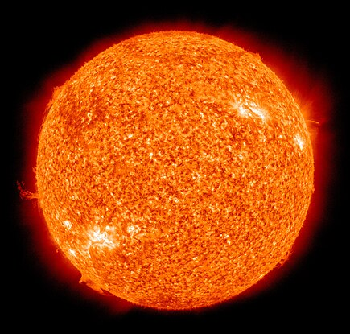
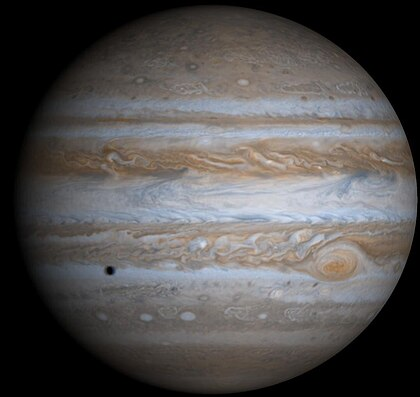

ما هو النظام الشمسي؟
النظام الشمسي هو مجموعة من الكواكب، والأقمار، والمذنبات، والكويكبات، تدور حول نجم مركزي يُدعى الشمس. يُعد النظام الشمسي واحدًا من مليارات الأنظمة في الكون.
يتكون النظام الشمسي من ثمانية كواكب رئيسية، وأقمار تدور حولها، وكويكبات تنتشر بين المريخ والمشتري، ومذنبات تجوب السماء بذيلها المضيء. بالإضافة إلى ذلك، هناك كواكب قزمة مثل بلوتو، وحزام كويبر الذي يحتوي على ملايين الأجسام الجليدية.

الشمس

الأرض

المريخ

المشتري